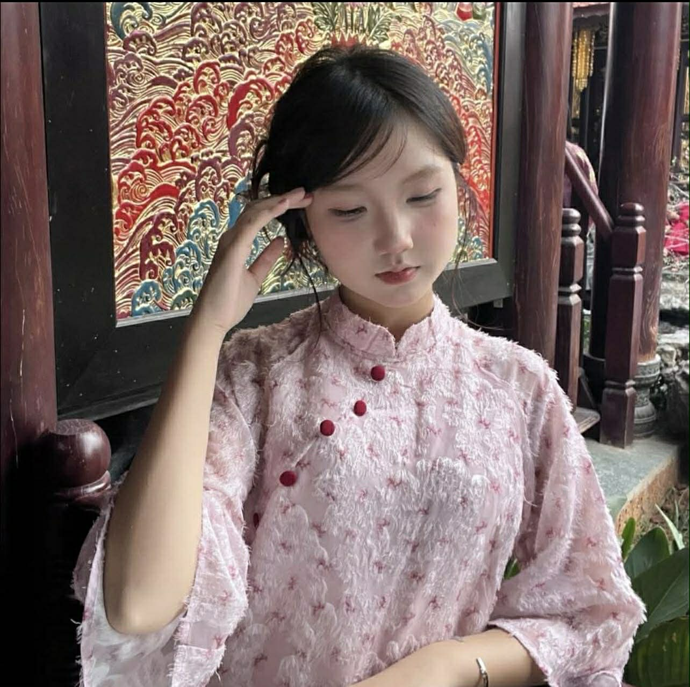
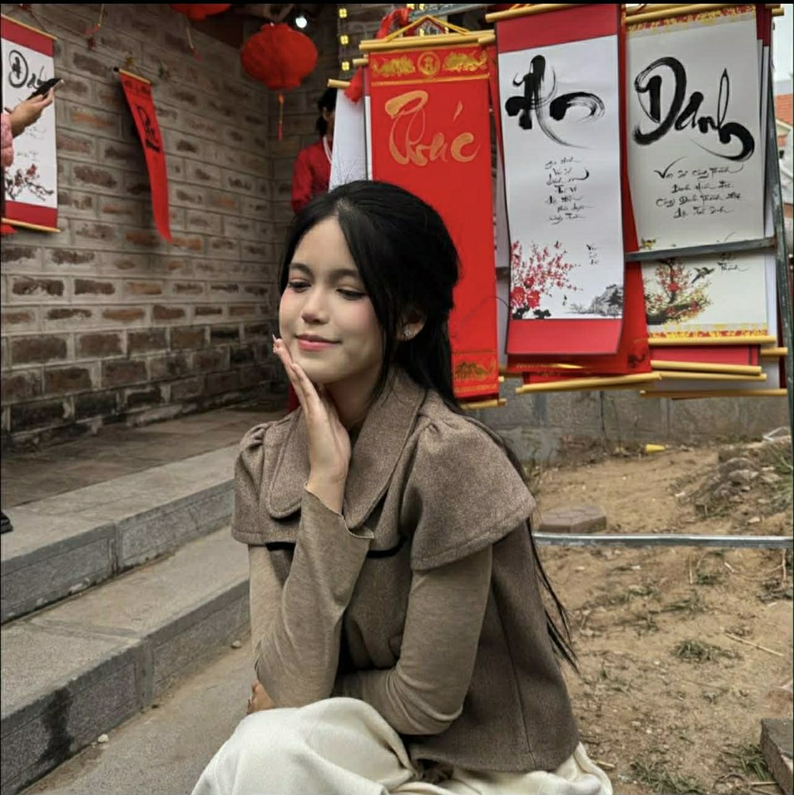
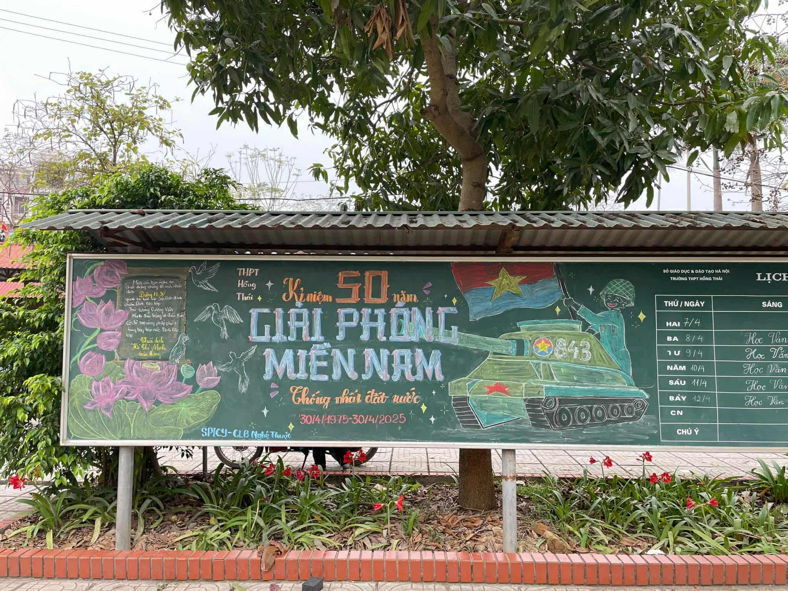

Ban chuyên môn của Đội Nghệ thuật là bộ phận chịu trách nhiệm chính về nội dung và chất lượng chuyên môn của các tiết mục biểu diễn trong đội. Đây là nhóm nòng cốt giúp định hướng, xây dựng và phát triển các hoạt động nghệ thuật của đội.

🔸 Đội trưởng CLB: Ngô Hoàng Nhật Ánh

🔸 Đội phó CLB: Nguyễn khánh ly
